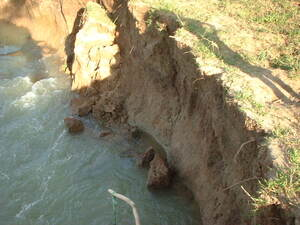

tebal 
/tɔbal/
v_rt.
“rock_fall”
v.
for a few rocks or stones (egkatebal, natebal, actor & theme, egkA><ø-) to fall down from a height (igkatebal, ingkatebal, reason, igkA><ø-)
Ka me tanè ne warè me pinamula, mahaan dè egkatebal su warè ma dalid ne egpakasubung kandan.
Unplanted lands will easily slip out for their is no root that can hold them.
Wrd.Gloss: rock_fall
O. Syn. tempag
cf. lunew —landslide
Eng. slip; rock fall; landslide
OCM: Disasters (731), Topography and Geology (133)
DDP: Mountain (1.2.1.1), Rock (1.2.2.2)
Online dict status: -
Usage level: M
adj.
(natebal, nA-) landslided
Eng. slip; rock fall; landslide
OCM: Disasters (731), Topography and Geology (133)
DDP: Mountain (1.2.1.1), Rock (1.2.2.2)
Online dict status: -
Usage level: M
Updated by: RJH,TME,NJK,NJK,QDL,NJK
Last updated: 13/Oct/2009
This page last updated: 03-Jan-2020
Copyright © 2009-2014, Matigsalug Language Christian Association, Inc